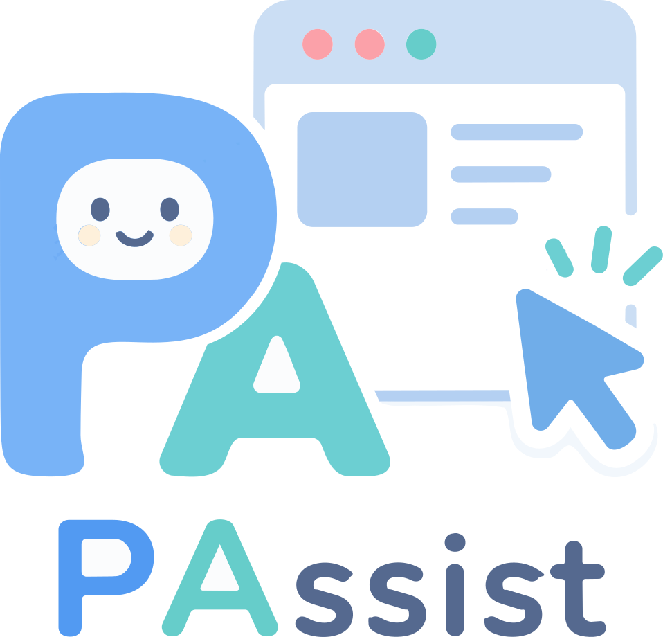
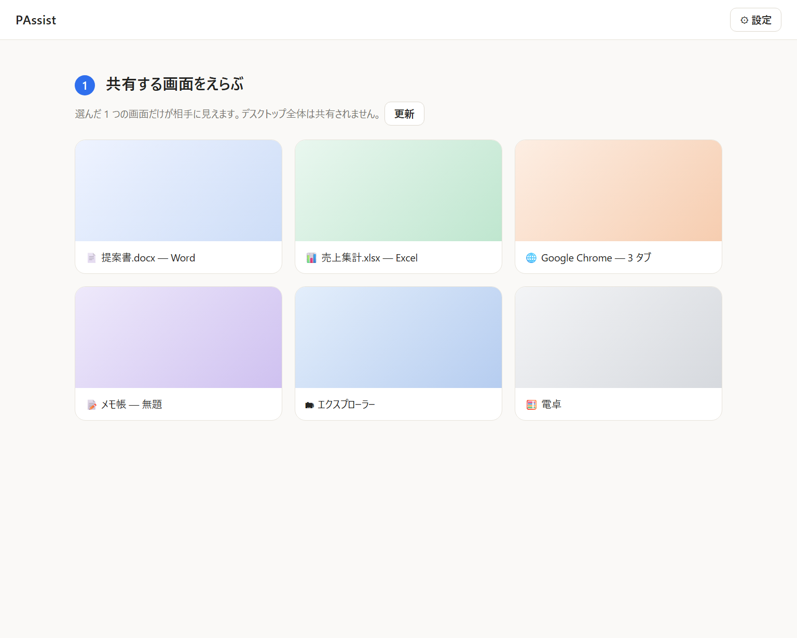
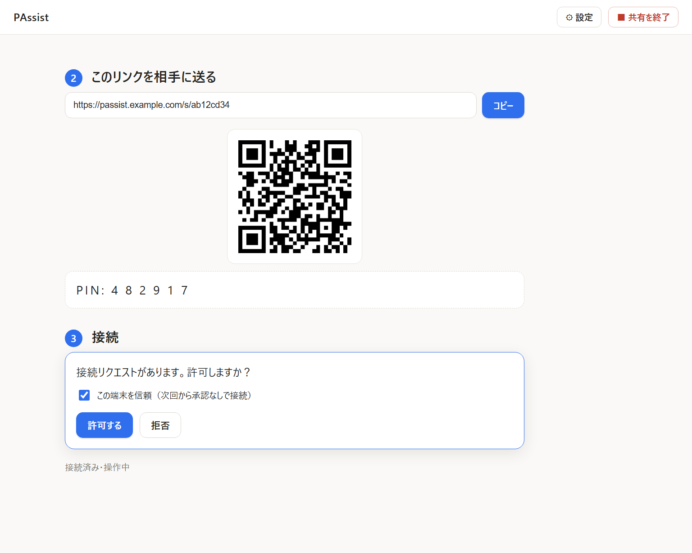
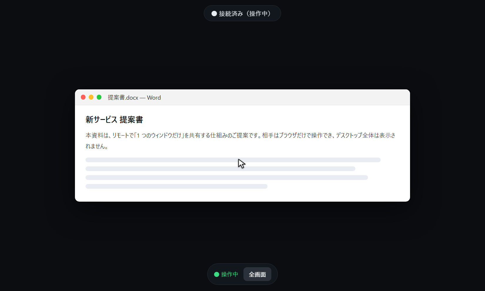

ブラウザだけで、1つのウィンドウを共有・遠隔操作。
アカウント不要。相手はQRコードを読み取るだけ（またはURLを開くだけ）で、すぐに操作を開始。デスクトップ全体は決して映りません。
PAssist は Windows 向けのリモート操作ツールです。共有するのは選んだ 1 つのウィンドウだけ。 操作する相手はブラウザを開くだけ（インストール・アカウント不要）で、映像と操作は WebRTC で暗号化されて流れます。
選んだ1つのウィンドウのみ。デスクトップや他の画面は構造的に映りません。
インストールもアカウントも不要。送られたURLを開くだけで操作を開始できます。
映像も操作も DTLS-SRTP で常に暗号化。シグナリングも https/wss 化できます。
あなたが許可するまで何も映りません。信頼した端末は次回から自動接続も可能。
Win / Alt+Tab / Alt+F4 などを遮断。操作は対象ウィンドウの中だけに限定。
セッションは期限付き（既定30分）。期限切れで自動的に失効します。無期限にも設定できます。
共有する人（ホスト）の操作はこれだけ。
PAssist を起動し、共有したいウィンドウを1つクリックして選びます。
自動発行された共有URL（QRコードも可）を相手に送ります。
接続リクエストを「許可」。これで相手がそのウィンドウを操作できます。
操作する人（ゲスト）は、送られた URL をブラウザで開くだけ。インストールもログインも要りません。
実際のアプリ画面です（デモ表示・IP や実URLは含みません）。



下のボタンから最新版の実行ファイルを入手できます。